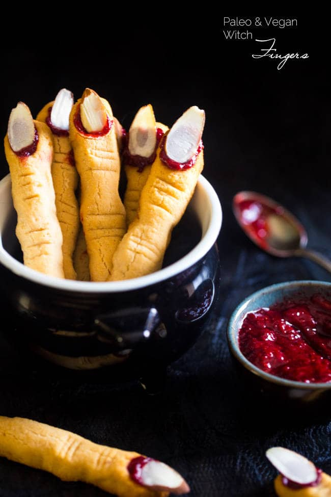

Spooky Witch Finger Cookies

Description
The classic witch-finger-cookies get a healthy, gluten free, paleo AND vegan makeover! They're easy to make and always a hit at Halloween parties! :)
Ingredients
For the cookies:
- 1/4 Cup Honey
- 1/2 Cup Coconut oil
- 1/2 tsp Vanilla extract
- 1/2 tsp Almond extract
- 1 Cup Coconut flour
- 1/4 tsp salt
- 16 sliced almonds
For the strawberry jelly:
- 3/4 Cup frozen strawberries
- 2 Tbsp Honey
Steps
- In a large bowl, using an electric hand mixer, beat together the honey and coconut oil till smooth and creamy.
Add in the vanilla and almond extracts and beat once more.
- Add the coconut flour and salt into the bowl and stir until well combined, and a wet dough forms.
- Scrape the dough onto a large piece of saran wrap and wrap into a flat, thin disc.
Place into the refrigerator until firm and roll-able, about 25-30 minutes.
- While the dough chills, preheat your oven to 325 degrees and line a baking sheet with parchment paper. Set aside.
- In a small sauce pan, combine the chopped berries and honey and bring to a boil over medium heat.
- Cook the berries, stirring frequently, until they become very thick and smooth, about 13-14 minutes.
Make sure to really keep an eye at them near the end of cooking time, so they don't burn.
- Transfer the berry mixture to a bowl and mash with a fork. Place into the refrigerator to set up.
- Remove the dough from the refrigerator and roll 1 Tbsp sized balls into 4 inch long finger-shapes, that are about 1/2 an inch thick.
- Place onto the prepared baking sheet and firmly press an sliced almond into the tip of the finger, to create fingernails. Remove the almond before baking.
- Using a small, sharp knife, make several horizontal, shallow cuts just under the finger nail, and then in the center of each finger, to represent knuckles.
Lightly press in the dough on either sides of the knuckles to shape them. Place the whole pan into the freezer for 10 minutes.
- Once frozen, bake the cookies until golden brown, and lightly crackly (the cracks are normal, don't worry!) about 12-13 *** minutes. Let cool on the pan COMPLETELY.
- Once cooled, dip the bottom of the finger into the strawberry jam, so it looks like it's been cut off.
Then, fill the finger nail space with a dollop of the jam, and press in a sliced almond.
- DEVOUR.